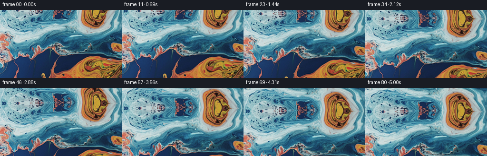
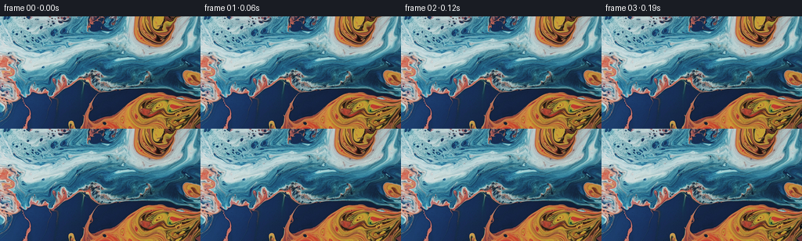

← 本轮 smoke 总览traex/GPT-5.6-Sol · 0003_s2
text · 256×144 · 16.0 FPS · 81 帧 · 状态 complete · 输出 tokens 5619
原始任务a close up of a blue and orange liquid, camera tilts up
当前保存结果
已保存候选与代码修改
这里按时间展示外部捕获的候选，每份均可单独播放。保存新版本不等于完成视觉检查；下方工具证据记录实际看过的图。
候选 01 · 2026-11-09T02:08:13.643617+00:00 · 点开播放与检查图
inspection.png

transition_check.png

代码变化
--- 上一保存版本
+++ 本次保存版本
@@ -0,0 +1,99 @@
+"""Create the requested 81-frame RGB liquid close-up video.
+
+The shot is generated only from the supplied first frame. A smoothly moving
+refractive coordinate field provides both the upward camera tilt and a small
+amount of coherent fluid drift. Reflective continuation is used outside the
+original photograph because it preserves the colors and fine texture at the
+moving upper boundary much better than a flat or blurred fill.
+"""
+from pathlib import Path
+
+import cv2
+import numpy as np
+from PIL import Image
+
+import artifact_io
+
+
+W, H = 256, 144
+N = 81
+
+
+def smootherstep(x):
+ """C2 easing: a real camera starts and settles without a jerk."""
+ return x * x * x * (x * (x * 6.0 - 15.0) + 10.0)
+
+
+def main():
+ case_dir = Path(__file__).resolve().parent
+ source = np.asarray(Image.open(case_dir / "first_frame.png").convert("RGB"), dtype=np.uint8)
+ if source.shape != (H, W, 3):
+ raise ValueError(f"unexpected first-frame shape: {source.shape}")
+
+ # High precision coordinates. The border is sampled reflectively: this
+ # acts as a seamless, color-faithful continuation of an abstract liquid.
+ yy, xx = np.mgrid[0:H, 0:W].astype(np.float32)
+ frames = np.empty((N, H, W, 3), dtype=np.uint8)
+ frames[0] = source # contract: bit-for-bit identity
+
+ cx, cy = (W - 1) * 0.5, (H - 1) * 0.5
+
+ for index in range(1, N):
+ u = index / (N - 1)
+ travel = smootherstep(u)
+
+ # An upward camera tilt moves the photographed liquid downward in the
+ # image. A tiny push-in gives the motion a photographic rather than a
+ # simple slideshow/pixel-scroll quality.
+ tilt = 49.0 * travel
+ zoom = 1.0 + 0.015 * travel
+ map_x = (xx - cx) / zoom + cx
+ map_y = (yy - cy) / zoom + cy - tilt
+
+ # Coherent, low-amplitude refraction. Every term is differenced from
+ # its t=0 phase so that motion grows continuously out of frame zero.
+ phase = 2.0 * np.pi * u
+ dx = (
+ 0.85 * (np.sin(yy / 29.0 + 0.56 * phase + xx / 103.0)
+ - np.sin(yy / 29.0 + xx / 103.0))
+ + 0.42 * (np.sin(xx / 43.0 - 0.31 * phase)
+ - np.sin(xx / 43.0))
+ )
+ dy = (
+ 0.65 * (np.sin(xx / 36.0 - 0.43 * phase + yy / 91.0)
+ - np.sin(xx / 36.0 + yy / 91.0))
+ + 0.30 * (np.cos(yy / 24.0 + 0.37 * phase)
+ - np.cos(yy / 24.0))
+ )
+
+ # Break up obvious mirror symmetry in only the newly revealed area.
+ # The displacement approaches zero continuously at the old top edge.
+ reveal_depth = np.maximum(-map_y, 0.0)
+ reveal_weight = 1.0 - np.exp(-reveal_depth / 10.0)
+ dx += reveal_weight * (0.16 * reveal_depth
+ + 1.15 * np.sin(reveal_depth / 10.5 + xx / 48.0))
+
+ map_x = (map_x + dx).astype(np.float32)
+ map_y = (map_y + dy).astype(np.float32)
+ frame = cv2.remap(
+ source, map_x, map_y,
+ interpolation=cv2.INTER_CUBIC,
+ borderMode=cv2.BORDER_REFLECT_101,
+ )
+
+ # Very restrained breathing of highlights as the camera angle changes.
+ # It is strongest halfway through and is spatially broad, avoiding any
+ # synthetic-looking sparkle or flicker.
+ light_strength = 0.018 * np.sin(np.pi * u)
+ light_field = (0.55 + 0.45 * np.sin(xx / 72.0 + yy / 57.0 + 1.4 * u))[..., None]
+ f = frame.astype(np.float32)
+ f += light_strength * light_field * (255.0 - f)
+ frames[index] = np.clip(f + 0.5, 0, 255).astype(np.uint8)
+
+ # Reassert identity after all calculations and save the benchmark artifact.
+ frames[0] = source
+ artifact_io.save(frames, case_dir)
+
+
+if __name__ == "__main__":
+ main()
可观测工具行为
命令 1 · 2026-11-09T02:06:58.289996+00:00/bin/bash -lc 'cat GENERATION_RULES.md'
exit 0 命令 2 · 2026-11-09T02:06:58.535785+00:00/bin/bash -lc "cat prompt.txt && printf '\\n---FILES---\\n' && find . -maxdepth 2 -type f -printf '%p\\n' | sort"
exit 0 命令 3 · 2026-11-09T02:06:58.896618+00:00/bin/bash -lc "python3 - <<'PY'
from PIL import Image
im=Image.open('first_frame.png')
print(im.mode, im.size)
print('extrema',im.getextrema())
PY"exit 0 命令 4 · 2026-11-09T02:07:13.165781+00:00/bin/bash -lc "cat task_spec.json && sed -n '1,240p' artifact_io.py"
exit 0 命令 5 · 2026-11-09T02:07:14.161582+00:00/bin/bash -lc "python3 - <<'PY'
from PIL import Image
import numpy as np
im=np.array(Image.open('first_frame.png'))
# grid block means 16x12-ish, classify print ansi-independent RGB averages and hsv classes
from colorsys import rgb_to_hsv
for y in range(0,144,8):
row=[]
for x in range(0,256,8):
c=im[y:y+8,x:x+8].mean((0,1))
h,s,v=rgb_to_hsv(*(c/255))
# symbols orange/red O, blue B, pale/white w, dark ., gray g
if v<.18:q='.'
elif s<.18:q='w' if v>.65 else 'g'
elif (h<.13 or h>.94) and c[0]>c[2]*1.2:q='O'
elif .47<h<.72:q='B'
elif .72<=h<.94:q='P'
else:q='x'
row.append(q)
print(''.join(row))
print('means rows')
for y in range(0,144,12):print(y, np.round(im[y:y+12].mean((0,1)),1))
# quantization dominant
q=(im//16*16).reshape(-1,3)
u,c=np.unique(q,axis=0,return_counts=True)
for i in np.argsort(c)[-20:][::-1]: print(c[i],u[i])
PY"exit 0 命令 6 · 2026-11-09T02:07:14.404326+00:00/bin/bash -lc "python3 - <<'PY'
import cv2, numpy as np
im=cv2.imread('first_frame.png')
print('cv',cv2.__version__)
# edges / optical structure by rows cols
G=cv2.cvtColor(im,cv2.COLOR_BGR2GRAY)
for y in range(0,144,8):
line=''
for x in range(0,256,4):
v=G[y:y+8,x:x+4].std()
line += 'â' if v>35 else 'â' if v>22 else 'â' if v>12 else 'â' if v>5 else ' '
print(line)
PY"exit 0 命令 7 · 2026-11-09T02:08:10.502779+00:00/bin/bash -lc "cat > generate.py <<'PY'
\"\"\"Create the requested 81-frame RGB liquid close-up video.
The shot is generated only from the supplied first frame. A smoothly moving
refractive coordinate field provides both the upward camera tilt and a small
amount of coherent fluid drift. Reflective continuation is used outside the
original photograph because it preserves the colors and fine texture at the
moving upper boundary much better than a flat or blurred fill.
\"\"\"
from pathlib import Path
import cv2
import numpy as np
from PIL import Image
import artifact_io
W, H = 256, 144
N = 81
def smootherstep(x):
\"\"\"C2 easing: a real camera starts and settles without a jerk.\"\"\"
return x * x * x * (x * (x * 6.0 - 15.0) + 10.0)
def main():
case_dir = Path(__file__).resolve().parent
source = np.asarray(Image.open(case_dir / \"first_frame.png\").convert(\"RGB\"), dtype=np.uint8)
if source.shape "'!= (H, W, 3):
raise ValueError(f"unexpected first-frame shape: {source.shape}")
# High precision coordinates. The border is sampled reflectively: this
# acts as a seamless, color-faithful continuation of an abstract liquid.
yy, xx = np.mgrid[0:H, 0:W].astype(np.float32)
frames = np.empty((N, H, W, 3), dtype=np.uint8)
frames[0] = source # contract: bit-for-bit identity
cx, cy = (W - 1) * 0.5, (H - 1) * 0.5
for index in range(1, N):
u = index / (N - 1)
travel = smootherstep(u)
# An upward camera tilt moves the photographed liquid downward in the
# image. A tiny push-in gives the motion a photographic rather than a
# simple slideshow/pixel-scroll quality.
tilt = 49.0 * travel
zoom = 1.0 + 0.015 * travel
map_x = (xx - cx) / zoom + cx
map_y = (yy - cy) / zoom + cy - tilt
# Coherent, low-amplitude refraction. Every term is differenced from
# its t=0 phase so that motion grows continuously out of frame zero.
phase = 2.0 * np.pi * u
dx = (
0.85 * (np.sin(yy / 29.0 + 0.56 * phase + xx / 103.0)
- np.sin(yy / 29.0 + xx / 103.0))
+ 0.42 * (np.sin(xx / 43.0 - 0.31 * phase)
- np.sin(xx / 43.0))
)
dy = (
0.65 * (np.sin(xx / 36.0 - 0.43 * phase + yy / 91.0)
- np.sin(xx / 36.0 + yy / 91.0))
+ 0.30 * (np.cos(yy / 24.0 + 0.37 * phase)
- np.cos(yy / 24.0))
)
# Break up obvious mirror symmetry in only the newly revealed area.
# The displacement approaches zero continuously at the old top edge.
reveal_depth = np.maximum(-map_y, 0.0)
reveal_weight = 1.0 - np.exp(-reveal_depth / 10.0)
dx += reveal_weight * (0.16 * reveal_depth
+ 1.15 * np.sin(reveal_depth / 10.5 + xx / 48.0))
map_x = (map_x + dx).astype(np.float32)
map_y = (map_y + dy).astype(np.float32)
frame = cv2.remap(
source, map_x, map_y,
interpolation=cv2.INTER_CUBIC,
borderMode=cv2.BORDER_REFLECT_101,
)
# Very restrained breathing of highlights as the camera angle changes.
# It is strongest halfway through and is spatially broad, avoiding any
# synthetic-looking sparkle or flicker.
light_strength = 0.018 * np.sin(np.pi * u)
light_field = (0.55 + 0.45 * np.sin(xx / 72.0 + yy / 57.0 + 1.4 * u))[..., None]
f = frame.astype(np.float32)
f += light_strength * light_field * (255.0 - f)
frames[index] = np.clip(f + 0.5, 0, 255).astype(np.uint8)
# Reassert identity after all calculations and save the benchmark artifact.
frames[0] = source
artifact_io.save(frames, case_dir)
if __name__ == "__main__":
main()
PY
python3 generate.py
python3 - <<'"'PY'
from PIL import Image
import numpy as np
z=np.load('pixels.npz')['pixels']
first=np.array(Image.open('first_frame.png'))
rec=np.stack([(z[:,:,0]>>16)&255,(z[:,:,0]>>8)&255,z[:,:,0]&255],-1).astype('uint8')
print('pixels tensor',z.shape,z.dtype)
print('frame0 exact:', np.array_equal(first,rec), 'max error',np.abs(first.astype(int)-rec.astype(int)).max())
ims=[np.array(Image.open(f'frames/{i:02d}.png')) for i in range(81)]
arr=np.stack(ims)
print('frames',arr.shape,arr.dtype,'range',arr.min(),arr.max())
print('mean abs adjacent deltas first/mid/last:',*[round(np.abs(arr[i].astype(int)-arr[i-1].astype(int)).mean(),3) for i in [1,20,40,60,80]])
print('end from start MAD',np.abs(arr[-1].astype(int)-arr[0].astype(int)).mean())
PY"exit 0 保存候选 1 份；完成命令 7 次；可验证图片返回 0 张。原始 API 响应与完整日志保留在本地。